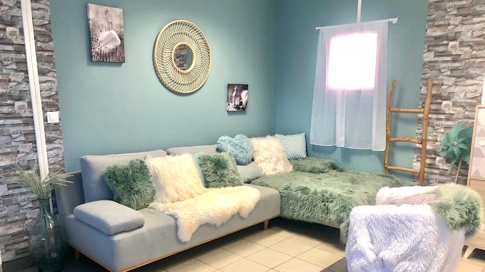
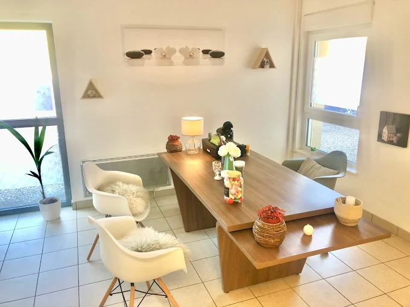

Consultation individuelle
Séances en cabinet, dans un cadre confidentiel et bienveillant. Conventionnée MonPsy — séances remboursées par l'Assurance Maladie, sans dépassement d'honoraires.
65 € / séance (sans prise en charge)

Psychologue Clinicienne agréée • Seichamps (54)
Que vous traversiez une période difficile, un trouble anxieux, une dépression ou simplement un besoin de mieux vous connaître, je vous accompagne à votre rythme.

Je ne prends plus de nouveaux patients en accès libre
Dans le cadre d'une collaboration au sein de la future maison de santé de Seichamps, je reçois désormais exclusivement les nouveaux patients adressés par mes médecins partenaires :

À propos
Diplômée de l'Université de Lorraine (Master 2 Psychologie Clinique et Psychopathologie), j'exerce en cabinet libéral à Seichamps, à proximité de Nancy, après plusieurs années en milieu hospitalier et en CMP.
Mon travail s'oriente particulièrement vers l'accompagnement du traumatisme et des blessures psychiques. J'accompagne adultes et adolescents face à :
Consultations
Des accompagnements adaptés à votre situation, en cabinet ou à distance.
Séances en cabinet, dans un cadre confidentiel et bienveillant. Conventionnée MonPsy — séances remboursées par l'Assurance Maladie, sans dépassement d'honoraires.
65 € / séance (sans prise en charge)
Séances en visioconférence sécurisée, idéales si vous habitez loin ou préférez rester chez vous. Même qualité d'accompagnement.
65 € / séance
Séance d'hypnose thérapeutique de 60 minutes pour accompagner la gestion du stress, des émotions, des blocages ou des traumatismes.
70 € / séance
Vous traversez une crise émotionnelle, une anxiété intense ou avez besoin d'une écoute immédiate ? Cette consultation d'urgence en visioconférence sécurisée vous permet d'accéder rapidement à un accompagnement psychologique, sans attendre.
100 € / séance · 1h · visio
Dispositif MonPsy — Assurance Maladie
Je suis psychologue conventionnée MonPsy. Consultez directement, sans passer par votre médecin traitant — aucun dépassement d'honoraires.
Prendre rendez-vousMon approche
Prenez rendez-vous en ligne via Doctolib.
Une première séance pour cerner vos difficultés, vos objectifs et définir ensemble le cadre thérapeutique.
Des séances régulières avec des outils adaptés à votre profil et vos besoins.
Le suivi évolue selon vos progrès. On travaille ensemble vers une plus grande autonomie, à votre rythme.
FAQ
Témoignages
Avis vérifiés sur Google
Excellente psychologue, qui vous accorde sans hésiter le temps, la douceur et la bienveillance nécessaires pour vous aider. Depuis que j'ai commencé à voir Mme Clavel, je me sens véritablement soutenue et écoutée.
Écoute, empathie et valorisation. Claire Clavel est chaleureuse et très attentive à la parole. La sienne est rassurante, positive et professionnelle. Son aide est précieuse.
Professionnelle très avenante et douce… On se sent en confiance, de très bons conseils.
Ressources
Des informations pour mieux comprendre la psychologie et prendre soin de vous.
Claire Clavel reçoit en cabinet à Seichamps (54280). Découvrez les services proposés, les tarifs et comment prendre rendez-vous.
Lire l'articleTroubles anxieux, phobies, attaques de panique... Comprendre l'anxiété et les approches thérapeutiques pour la surmonter.
Lire l'articleLe burn-out touche de plus en plus de personnes. Signes, causes et accompagnement psychologique pour retrouver l'équilibre.
Lire l'articleLa dépression est une maladie qui se soigne. Découvrez comment un suivi psychologique peut vous accompagner vers le mieux-être.
Lire l'articleContact
Contactez-moi par téléphone, e-mail ou via le formulaire. Je vous réponds dans les 24h ouvrées.